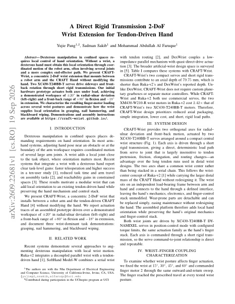

CRAFT-Wrist
A Direct Rigid Transmission 2-DoF Wrist Extension for Tendon-Driven Hand
IROS 2026 · Sensors and Actuators for Dexterous Manipulation Workshop

Overview
Changing the angle of a tool can require a large arm movement when the hand is fixed at the wrist. CRAFT-Wrist adds local orientation control between the arm and the tendon-driven CRAFT Hand.
Hardware and motion range
Two servos drive short rigid transmissions. On the prototype, side-to-side deviation reached 20° in each direction. Front-to-back travel reached 80° in flexion and 18° in extension. The physical demonstration shows the arm and wrist working together during nail hammering.
URDF and wrist simulations
The CAD-based model exposes 17 independent coordinates. These scripted demonstrations use a provisional two-axis wrist approximation and idealized grasps. The pouring scene represents the contents as grains.
Run locally
Run these commands from the CRAFT-W URDF repository with Python 3.12.
python -m pip install -r requirements-viewer.txt
python scripts/launch_demo.py wrist --interactive
python scripts/launch_demo.py cup-pourPaper

A Direct Rigid Transmission 2-DoF Wrist Extension for Tendon-Driven Hand
Yujie Pang, Sadman Sakib, Mohammad Abdullah Al Faruque
IROS 2026 · Sensors and Actuators for Dexterous Manipulation Workshop
BibTeX
@misc{pang2026craftwrist,
title = {A Direct Rigid Transmission 2-DoF Wrist Extension for Tendon-Driven Hand},
author = {Pang, Yujie and Sakib, Sadman and Al Faruque, Mohammad Abdullah},
year = {2026},
eprint = {2609.22681},
archivePrefix = {arXiv},
primaryClass = {cs.RO},
url = {https://arxiv.org/abs/2609.22681}
}